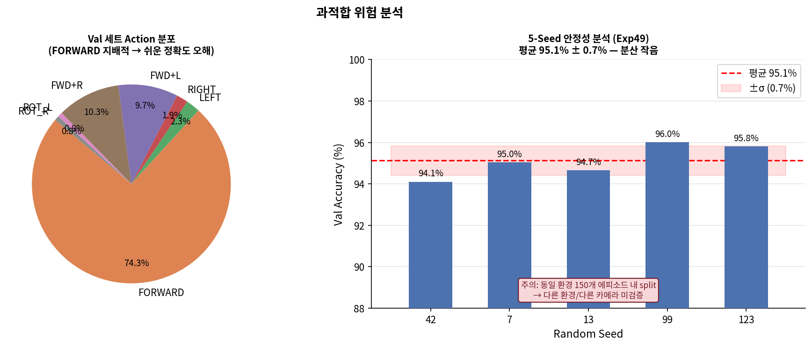

n_train=8,400 (Exp49의 4배)으로 늘렸을 때 val_acc와 train_acc 간의 gap 분석.
원본 그래프

8,400
Exp51 n_train (Exp49의 4배)
93.3%
Exp51 val_acc
96.4%
Exp49 val_acc (n_train 2,100)
⚠️ 학습 데이터를 늘렸는데 val_acc가 오히려 감소 (96.4%→93.3%):
augmentation이 학습 데이터를 인위적으로 왜곡시키므로, 원본 val 분포와 괴리가 생길 수 있다.
Exp51의 crop aug는 robustness를 높이는 대신 원본 분포에서의 정확도를 일부 희생했다.
실험별 학습 데이터 크기 vs val_acc
실험
n_train
aug 방식
val_acc
Exp46
2,100
없음
93%
Exp47
2,100
없음 (instr embed)
99%
Exp49
2,100
없음 (goal signal)
96%
Exp50
4,200
Flip aug
92%
Exp51
8,400
Crop aug
93%
💡 aug 없이 2,100 샘플만 써도 Exp49가 최고 정확도(96.4%).
n_train을 늘리는 것보다 학습 목표(goal signal, instr embed) 설계가 더 효과적이었다.